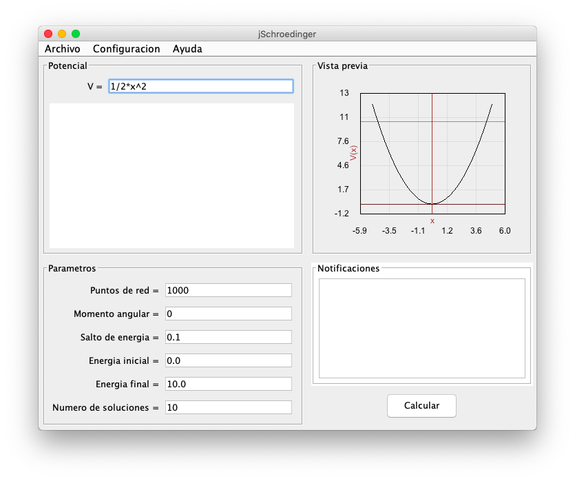
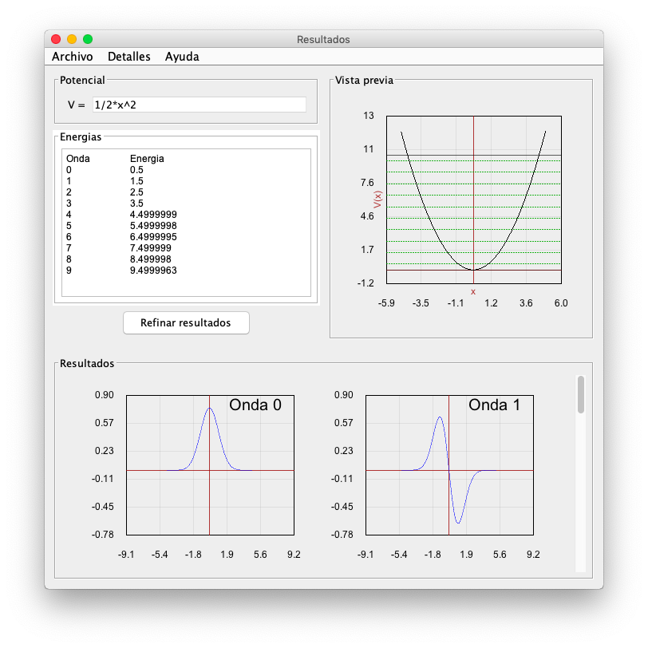
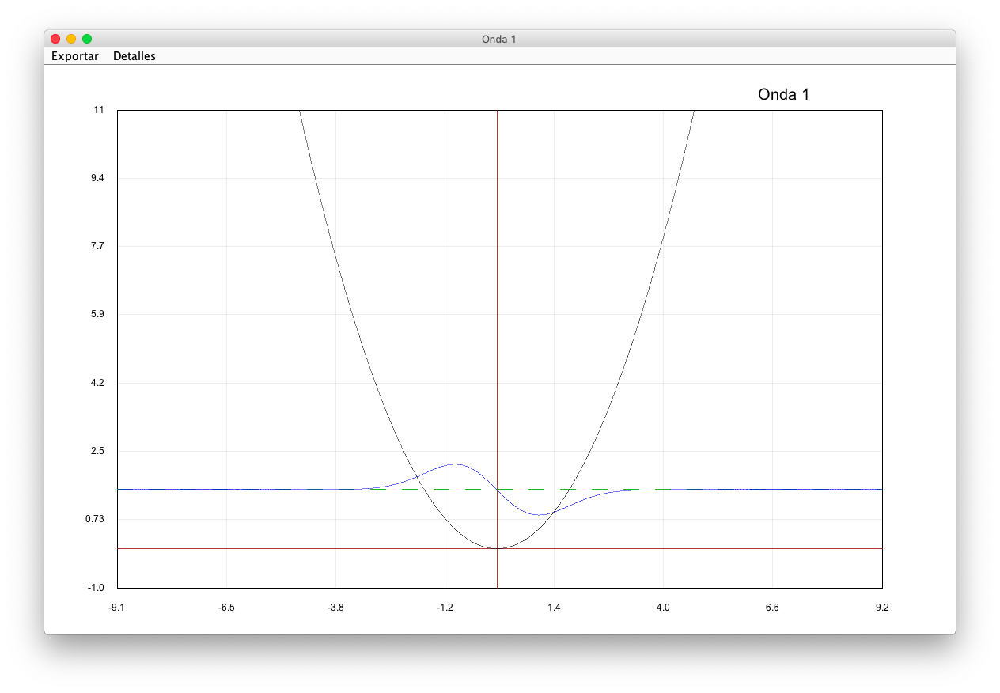
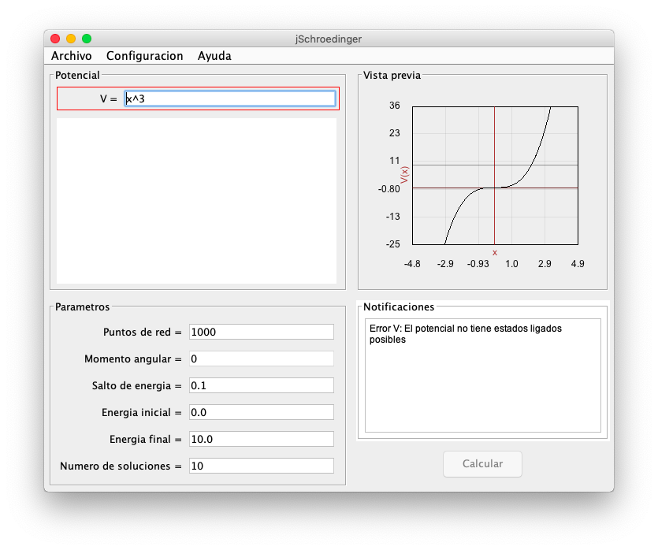
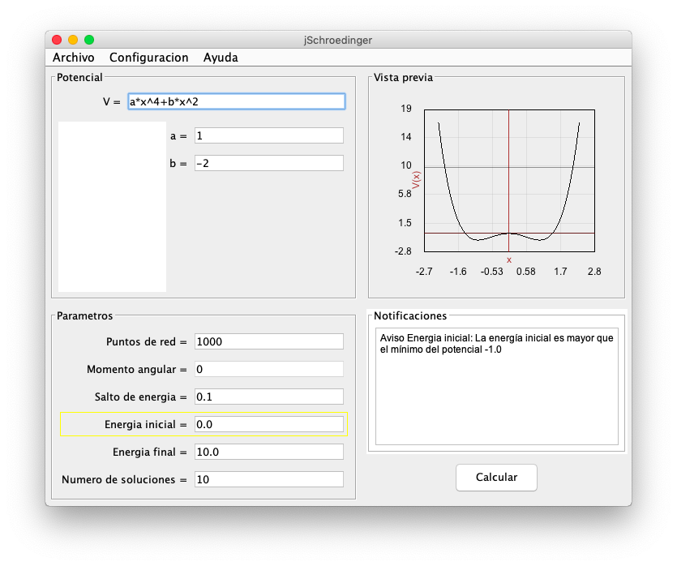
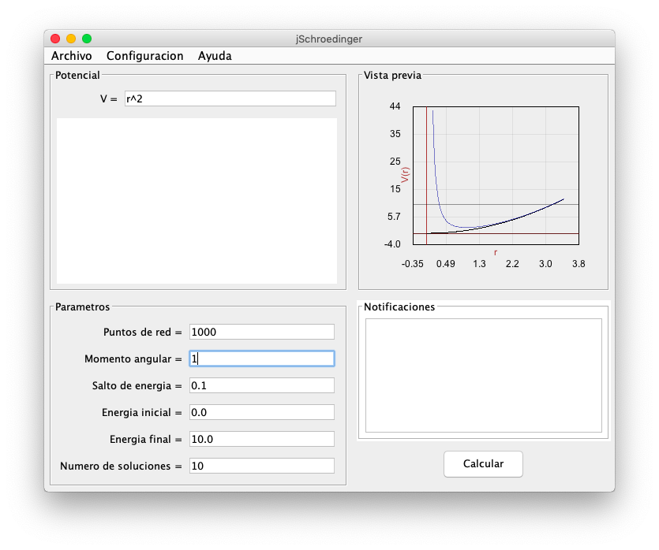
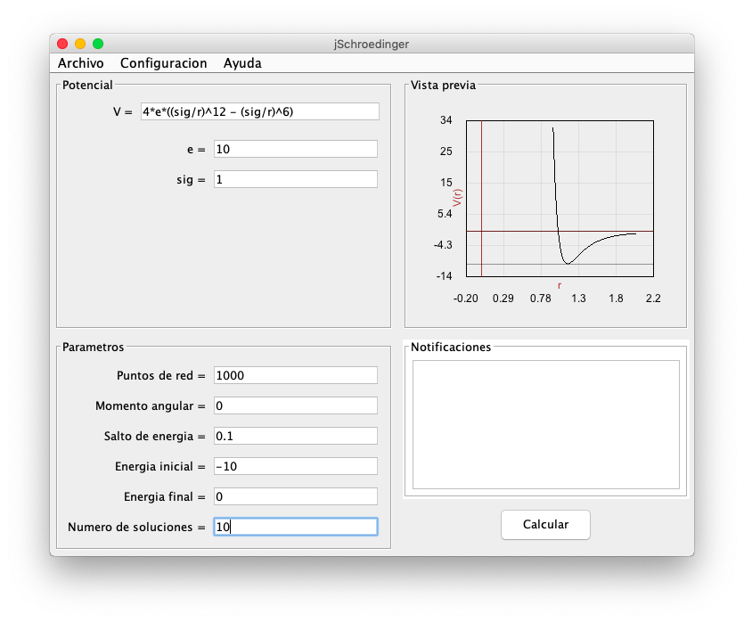

jSchroedinger
jSchroedinger es un programa que resuelve numéricamente potenciales cuánticos arbitrarios usando el algoritmo de Numerov.
El programa está escrito en java y distribuido como un "jar" ejecutable.
Descargar jSchroedinger
En Mac la ejecucion de programas descargados de la web está bloqueada por defecto, es necesario hacer control+click+abrir la primera vez para permitir la ejecución
El programa es el resultado de mi proyecto de fin de carrera de informática. Para más detalles:
Algunas capturas de pantalla:
Panel inicial, potencial cuadrático

Panel de resultados, potencial cuadrático

Panel de solucion de onda, permite exportar la imagen

Panel inicial, potencial cúbico sin soluciones ligadas

Panel inicial, potencial cuártico con parametros

Panel inicial, potencial en coordenadas radiales, con momento angular

Panel inicial, potencial de Lenard-Jones
